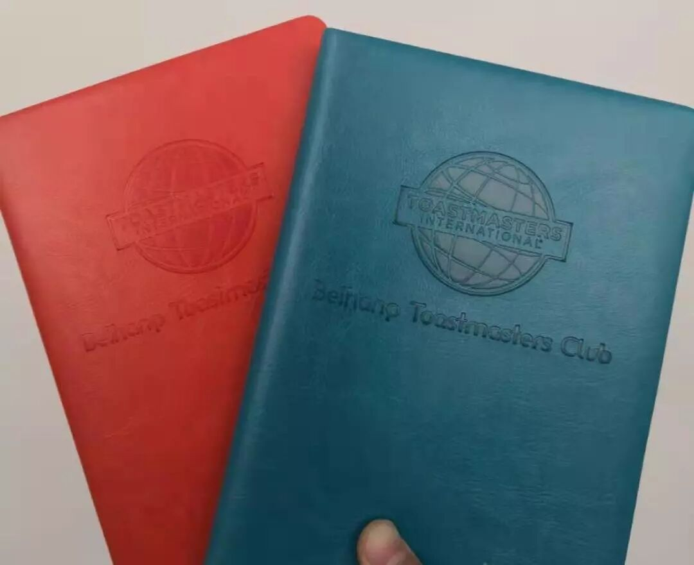
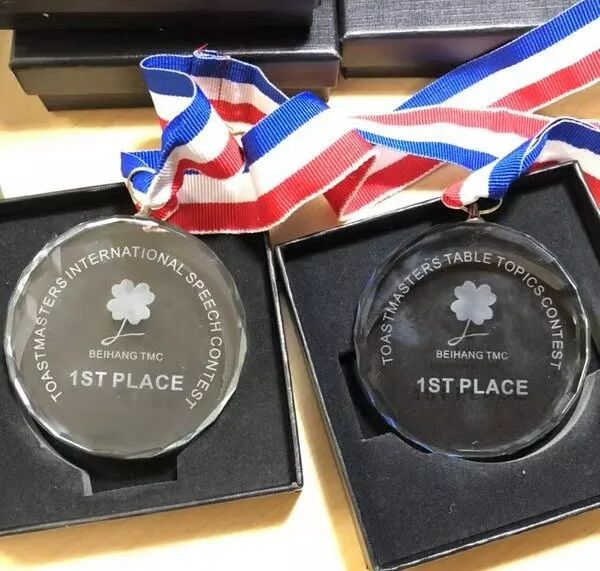

演讲比赛预告
头马国际演讲比赛即将拉开帷幕，而我们北航头马也于本周开始俱乐部内的首次选拔啦。详情请点击“阅读原文”。此次比赛的另一个亮点是什么？奖品！！！
我们专门为这次担任角色及参与比赛的会员准备了北航头马定制的笔记本。封面材料来自美国农场上等的牛皮。表面平坦光滑无毛孔及皮纹，在制作中表层粒面做轻微磨面修饰，在皮革上面喷涂一层有色树脂，掩盖皮革表面纹路，再喷涂水性光透树脂，印上北航头马LOGO，简约之中，却透露着尊贵的气息。拿在手中，细腻无比。由于皮革材料来自美国，也就是说，这只牛从小便生活在纯正的英语环境中，耳濡目染之下，皮革里也蕴含了非常多的语感，并在其周围形成无形的语场。利用这个笔记本学习英语，时刻笼罩在强大的语场之下，有着得天独厚的优势，非常适合学习英语的学生。

北航头马定制笔记本
至于对于晋级选手的奖励，我们准备了有纯天然白水晶制作的奖牌，配以真丝绸带。白水晶在整个水晶的族群来说，分布最广，数量最多，运用最广 作为晋级选手，会面对更加激烈的比赛，这不可避免地会导致焦虑毛躁，内分泌失调，更年期提前发作等一系列问题，而白水晶是佛教七宝之一，又称为“摩尼宝珠”。白水晶对于调节内分泌，清除负性能量拥有其强大功效。当你随身携带白水晶的时候，它的磁场会帮你挡掉一些不良磁场的袭击，它会提供一个让你本身精神平和、激发潜能的磁场，让你随时保持最佳状态来应付身边所有的事物。至于丝绸，是为了大家以后比赛失利自挂东南枝之用，特别结实。
注：体重大于200斤者请配合2mm钢丝绳使用。

天然水（bo）晶（li）奖牌
怎么样，心动了吗？心动也没用，因为你根本得不到啊。但是别忘了，这些神器会时刻散发一种强磁场，置身其中，语感也会大幅度提升，据相关石专家估计，只要两小时，就可以达到英文脱口而出的效果。
不信？不信来试试啊
时间地点
比赛时间：3.15（本周五） 19：00-21：00
比赛地点：北航新主楼，B204教室
北航头马
让拿奖成为乐趣
长按扫码关注我们

https://mp.weixin.qq.com/s/IZUohjIWOBOYcKqmzBC0_Q
本页为抢救式本地归档，图文已永久保存。